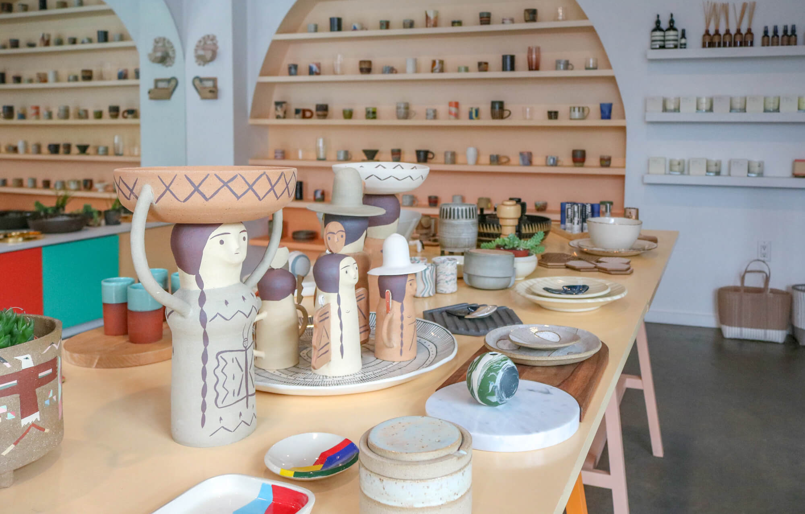

Origins
As a young child, I've always been facinated with art and the different ways it
can be created. For as long as I can remember, I wanted to do something creative and art was a gateway into that for me.
I love art with a passion. I studied it as much as I could growing up. In my retirement days, I'd
like to have my own art studio where I can peacefully throw pottery, paint, and more.

What does it mean to me
Art is writing. Art is drawing, Art is thinking, singing, speech. Art can be whatever I want it to be.
Art is a means of an escape. A way for me to leave my realitites behind and create a new one. Art is abstract.
Art is image and art is sound. Art is beauty, and art is sequence. Art is overflows passion and evokes emotion. Most importantly, art touches the heart. Everything is
art in its own way.
Why I love it
Art is one of the best ways through which a human being can give shape to his or her thoughts.
It is a process of materializing one’s thoughts. Your imagination and thoughts start to exist in a real world.
They are no more in your mind but in front of your eyes and can be seen by the rest of the world.
I believe that every art work is a very personal experience of its creator. It allows me to showcase my view of the work with my hands.
It's an exprience like no other.